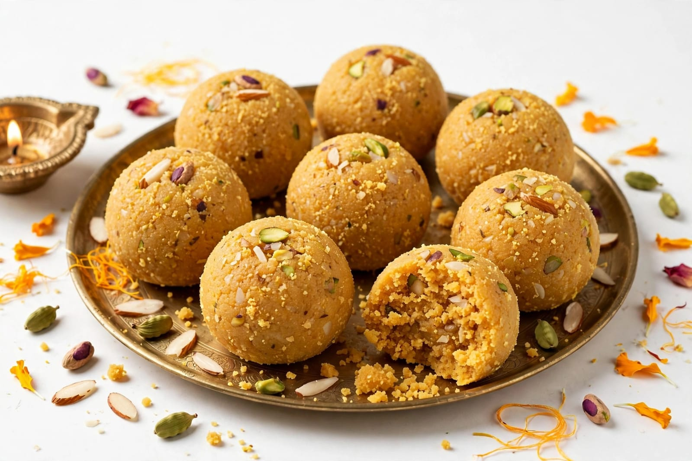
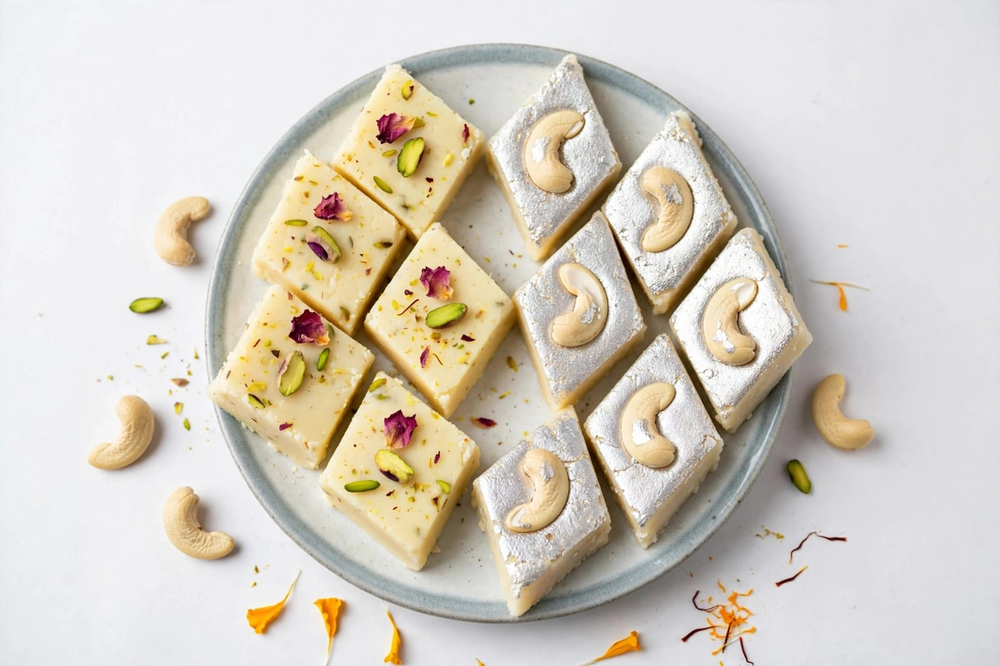
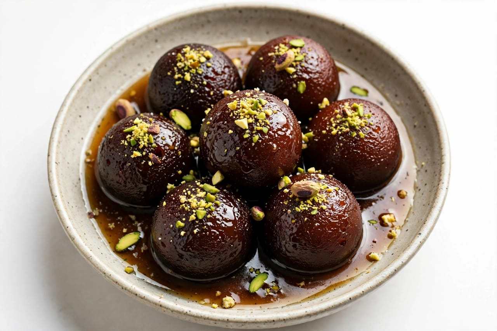

About Raksha Bandhan
Raksha Bandhan is a popular festival celebrated in India. It celebrates the special bond between brothers and sisters. The festival is also known as Rakhi. Raksha Bandhan is celebrated with love and happiness. The word Raksha means protection. The word Bandhan means bond or relationship. On this day, sisters traditionally tie a Rakhi on their brothers' wrists. Rakhi is a colourful sacred thread or decorative bracelet. Brothers traditionally give gifts to their sisters. The festival represents love, respect and care. Raksha Bandhan is celebrated according to the Hindu calendar. It usually falls during July or August. The festival is celebrated on the full moon day of Shravan. Families prepare for the festival with happiness. Sisters choose beautiful Rakhis for their brothers. Rakhis are available in many different designs. Some Rakhis are simple and traditional. Others may have colourful decorations. Sisters perform a small traditional ceremony. They may apply a tilak on their brother's forehead. The Rakhi is then tied around the brother's wrist. Sweets are shared after the Rakhi ceremony. Brothers give gifts to their sisters. Sisters also give blessings and good wishes. Families spend time together during the festival. Relatives may visit each other. People exchange greetings and sweets. The festival strengthens family relationships. Raksha Bandhan promotes love between siblings. It reminds brothers and sisters to care for each other. The celebration creates happy family memories. Children enjoy the colourful festival. Markets become busy before Raksha Bandhan. Shops display many varieties of Rakhis. Sweet shops prepare special sweets. Families buy gifts for their loved ones. Traditional clothes may be worn during the celebration. Raksha Bandhan has cultural importance in India. The festival is celebrated with joy and affection. It represents a strong family bond.
Raksha Bandhan is celebrated in different parts of India. Different communities have their own traditions. The main ceremony usually takes place during the day. Families gather together for the celebration. Sisters prepare the Rakhi and puja items. A traditional Rakhi thali may contain several items. The thali may include Rakhi, rice and sweets. A diya may also be included in the ceremony. Sisters may perform an aarti for their brothers. Tilak is traditionally applied during the ceremony. The Rakhi is tied after the prayer. Brothers give gifts to their sisters. Gifts can include clothes, books or other useful items. Sisters may also receive sweets and flowers. The celebration is based on mutual love and respect. Raksha Bandhan is not only about gifts. It is mainly about strengthening relationships. Brothers and sisters promise to support each other. Family members enjoy meals together. Special dishes are prepared for the festival. Sweets are an important part of the celebration. Laddu is a popular sweet served during festivals. Barfi is also commonly enjoyed. Gulab jamun is another favourite sweet. Kheer may also be prepared at home. Homemade snacks are shared with guests. People visit relatives during Raksha Bandhan. Families exchange greetings and blessings. Long-distance siblings may celebrate through video calls. Rakhis and gifts may be sent to family members. The festival helps maintain family connections. It creates a feeling of happiness and togetherness. Children learn about family values through the festival. Respect for siblings is an important value. The festival encourages caring and sharing. It strengthens emotional bonds between family members. Raksha Bandhan creates a warm family atmosphere. People celebrate the day with happiness. The festival is an important Indian cultural tradition. It is enjoyed by people of different age groups.
Raksha Bandhan has many traditional stories and customs. Different regions may follow different practices. Some traditions connect Rakhi with historical and religious stories. The festival has developed many customs over time. Today, people celebrate Raksha Bandhan in both traditional and modern ways. Sisters may select Rakhis according to their brothers' interests. Some Rakhis are made with colourful threads. Some Rakhis contain decorative beads and designs. Eco-friendly Rakhis are also available. Families decorate their homes for the occasion. People prepare special food for visiting relatives. Sweet dishes are commonly shared. The Rakhi ceremony is usually performed with respect. Brothers and sisters exchange loving wishes. The festival encourages family unity. It reminds people to value their relationships. Raksha Bandhan creates memorable moments for siblings. It brings families closer together. Raksha Bandhan is a beautiful festival of love and togetherness.
Special Foods

Laddu
Laddu is a popular sweet prepared and shared during Raksha Bandhan.

Barfi
Barfi is a traditional milk-based sweet enjoyed during festivals.

Gulab Jamun
Gulab Jamun is a popular sweet served during family celebrations.